- 00 开篇词 为什么大厂面试必考操作系统？.md.html
- 00 课前必读 构建知识体系，可以这样做！.md.html
- 01 计算机是什么：“如何把程序写好”这个问题是可计算的吗？.md.html
- 02 程序的执行：相比 32 位，64 位的优势是什么？（上）.md.html
- 03 程序的执行：相比 32 位，64 位的优势是什么？（下）.md.html
- 04 构造复杂的程序：将一个递归函数转成非递归函数的通用方法.md.html
- 05 存储器分级：L1 Cache 比内存和 SSD 快多少倍？.md.html
- 05 (1) 加餐 练习题详解（一）.md.html
- 06 目录结构和文件管理指令：rm -rf 指令的作用是？.md.html
- 07 进程、重定向和管道指令：xargs 指令的作用是？.md.html
- 08 用户和权限管理指令： 请简述 Linux 权限划分的原则？.md.html
- 09 Linux 中的网络指令：如何查看一个域名有哪些 NS 记录？.md.html
- 10 软件的安装： 编译安装和包管理器安装有什么优势和劣势？.md.html
- 11 高级技巧之日志分析：利用 Linux 指令分析 Web 日志.md.html
- 12 高级技巧之集群部署：利用 Linux 指令同时在多台机器部署程序.md.html
- 12 (1)加餐 练习题详解（二）.md.html
- 13 操作系统内核：Linux 内核和 Windows 内核有什么区别？.md.html
- 14 用户态和内核态：用户态线程和内核态线程有什么区别？.md.html
- 15 中断和中断向量：Javajs 等语言为什么可以捕获到键盘输入？.md.html
- 16 WinMacUnixLinux 的区别和联系：为什么 Debian 漏洞排名第一还这么多人用？.md.html
- 16 (1)加餐 练习题详解（三）.md.html
- 17 进程和线程：进程的开销比线程大在了哪里？.md.html
- 18 锁、信号量和分布式锁：如何控制同一时间只有 2 个线程运行？.md.html
- 19 乐观锁、区块链：除了上锁还有哪些并发控制方法？.md.html
- 20 线程的调度：线程调度都有哪些方法？.md.html
- 21 哲学家就餐问题：什么情况下会触发饥饿和死锁？.md.html
- 22 进程间通信： 进程间通信都有哪些方法？.md.html
- 23 分析服务的特性：我的服务应该开多少个进程、多少个线程？.md.html
- 23 (1)加餐 练习题详解（四）.md.html
- 24 虚拟内存 ：一个程序最多能使用多少内存？.md.html
- 25 内存管理单元： 什么情况下使用大内存分页？.md.html
- 26 缓存置换算法： LRU 用什么数据结构实现更合理？.md.html
- 27 内存回收上篇：如何解决内存的循环引用问题？.md.html
- 28 内存回收下篇：三色标记-清除算法是怎么回事？.md.html
- 28 (1)加餐 练习题详解（五）.md.html
- 29 Linux 下的各个目录有什么作用？.md.html
- 30 文件系统的底层实现：FAT、NTFS 和 Ext3 有什么区别？.md.html
- 31 数据库文件系统实例：MySQL 中 B 树和 B+ 树有什么区别？.md.html
- 32 HDFS 介绍：分布式文件系统是怎么回事？.md.html
- 32 (1)加餐 练习题详解（六）.md.html
- 33 互联网协议群（TCPIP）：多路复用是怎么回事？.md.html
- 34 UDP 协议：UDP 和 TCP 相比快在哪里？.md.html
- 35 Linux 的 IO 模式：selectpollepoll 有什么区别？.md.html
- 36 公私钥体系和网络安全：什么是中间人攻击？.md.html
- 36 (1)加餐 练习题详解（七）.md.html
- 37 虚拟化技术介绍：VMware 和 Docker 的区别？.md.html
- 38 容器编排技术：如何利用 K8s 和 Docker Swarm 管理微服务？.md.html
- 39 Linux 架构优秀在哪里.md.html
- 40 商业操作系统：电商操作系统是不是一个噱头？.md.html
- 40 (1)加餐 练习题详解（八）.md.html
- 41 结束语 论程序员的发展——信仰、选择和博弈.md.html
16 WinMacUnixLinux 的区别和联系：为什么 Debian 漏洞排名第一还这么多人用？
在我的印象中 Windows 才是最容易被攻击的操作系统，没想到 2020 年美国 NIST 的报告中， Debian 竟然是过去 20 年中漏洞最多的操作系统。Debain 以 3067 个漏洞稳居第一，第二名是 Android，第三名是 Linux Kernel。那么为什么 Debian 漏洞数会排在第一位呢？
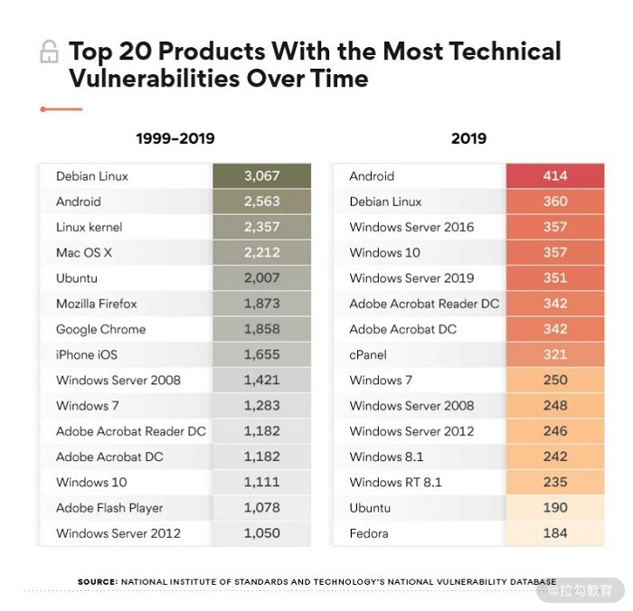
NIST的数据报告：软件漏洞排名
今天我们就以这个问题为引，带你了解更多的操作系统。这就要追溯到 20 世纪操作系统蓬勃发展的年代。那是一个惊艳绝伦的时代，一个个天才黑客，一场场激烈的商战，一次次震撼的产品发布会——每个人都想改变世界，都在积极的抓住时机，把握时代赋予的机会。我们今天的工程师文化——一种最纯粹的、崇尚知识，崇尚创造的文化，也是传承于此。
本课时作为内核部分的最后一课，我会带你了解一些操作系统的历史，希望通过这种方式，把这种文化传承下去，让你更有信心去挑战未来的变化。当然，你也可以把本课时当作一个选学的内容，不会影响你继续学习我后面的课程。
IBM
话不多说，我们正式开始。1880 年美国进行了一次人口普查，涉及5000 多万人。因为缺少技术手段，总共用了 7 年半时间才完成。后来霍尔列斯发明了一种穿孔制表机，大大改善了这种情况，而后他还给这种机器申请了专利。
1896 年，霍尔列斯成立了 CRT 公司，也就是 IBM 的前身。后来霍尔列斯经营不善，遇到困难，中间有金融家，军火商都参与过 CRT 的经营，却没能使得情况好转。
直到 1914 年托马斯·约翰·沃森（老沃森）加盟CRT，帮助霍尔列斯管理 CRT，情况才逐渐好转。老沃森是一个销售出身，很懂得建立销售团队的文化，所以才能逐渐把 CRT 的业务做起来，成为 CRT 的实际掌控者。在 1924 年 CRT 正式更名为 IBM，开启了沃森的时代。
IBM（International Business Machines Corporation）一开始是卖机器的。后来沃森的儿子，也就是小沃森后来逐渐接管了 IBM。小沃森对蓬勃发展的计算机产业非常感兴趣，同时也很看好计算机市场。但也正因如此，沃森父子间发生了一场冲突。老沃森的著名论断也是出自这场冲突：世界上对计算机有需求的人不会超过 5 个。于是我们都成了这幸运的 5 个人之一。
所以 IBM 真正开始做计算机是 1949 年小沃森逐渐掌权后。1954 年，IBM 推出了世界上第一个拥有操作系统的商用计算机——IBM 704，并且在 1956 年时独占了计算机市场的 70% 的份额。
你可能会问，之前的计算机没有操作系统吗？
我以第一台可编程通用计算机 ENIAC 为例，ENIAC 虽然支持循环、分支判断语句，但是只支持写机器语言。ENIAC 的程序通常需要先写在纸上，然后再由专业的工程师输入到计算机中。 对于 ENIAC 来说执行的是一个个作业，就是每次把输入的程序执行完。
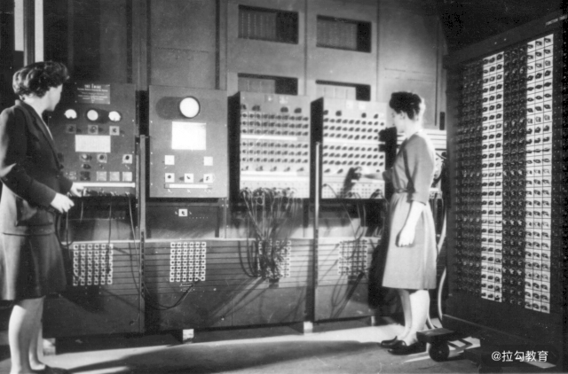
上图中的画面正是一位程序员通过操作面板在写程序。 那个时候写程序就是接线和使用操作面板开关，和今天我们所说的“写程序”还是有很大区别的。
所以在 IBM 704 之前，除了实验室产品外，正式投入使用的计算机都是没有操作系统的。但当时 IBM 704 的操作系统是美国通用移动公司帮助研发的 GM-NAA I/O 系统，而非 IBM 自研。IBM 一直没有重视操作系统的研发能力，这也为后来 IBM 使用微软的操作系统，以及进军个人 电脑 市场的失败埋下了伏笔。
大型机操作系统
1975 年前，还没有个人电脑，主要是银行、政府、保险公司这些企业在购买计算机。因为比较强调数据吞吐量，也就是单位时间能够处理的业务数量，因此计算机也被称作大型机。
早期的大型机厂商往往会为每个大型机写一个操作系统。后来 1964 年 IBM 自研了 OS/360 操作系统，在这个操作系统之上 IBM 推出了 System/360 大型机，然后在 1965~1978 年间，IBM 以 System/360 的代号陆陆续续推出了多款机器。开发 System/360 大型机的过程也被称为 IBM 的一次世纪豪赌，雇用了 6W 员工，新建了 5 个工厂。这么大力度的投资背后是小沃森的支持，几乎是把 IBM 的家底掏空转型去做计算机了。 IBM 这家公司喜欢押注，而且一次比一次大——2019 年 IBM 以 340 亿美金收购红帽，可能是 IBM 想在云计算和操作系统市场发力。
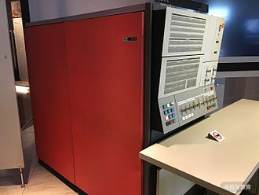
IBM 投入了大量人力物力在 System/360 上，也推进了 OS/360 的开发。当时 IBM 还自研了磁盘技术，IBM 自己叫作 DASD（Direct access storage devices）。
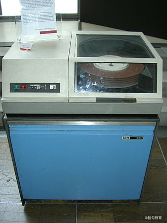
从上图中你可以看到，IBM 自研的磁盘，非常类似今天硬盘的结构的。当时支持磁盘的操作系统往往叫作 DOS（Disk Operating System）。还有一些是支持磁带的操作系统，叫作 TOS（Tape Operating System）。所以 OS/360 早期叫作 BOS/360，就是 Basic Operating System，后来分成了 DOS/360 和 TOS/360。现在我们不再根据硬件的不同来区分系统了，而是通过驱动程序驱动硬件工作，对硬件的支持更像是插件一样。
为了支持大型机的工作，IBM 在1957 年还推出了 Fortran（Formula Translation）语言。这是一门非常适合数值计算的语言，目的是更好地支持业务逻辑处理。计算机、语言、操作系统，这应该是早期计算机的三要素。把这三个环节做好，就能占领市场。
那个时代的操作系统是作业式的，相当于处理一个个任务，核心是一个任务的调度器。它会先一个任务处理，完成后再处理另一个任务，当时 IBM 还没有想过要开发分时操作系统，也就是多个任务轮流调度的模型。直到 Unix 系统的前身 Multics 出现，IBM 为了应对时代变化推出了 TSS/360（T 代表 Time Sharing）。
和大型机相比，还有一个名词是超级计算机。超级计算机是指拥有其他计算机无法比拟的计算性能的计算机，目前超算每秒可以达到万亿次计算。通常处理业务，不需要超算。超算的作用还是处理科学问题。比如淘宝某次双 11 当天的订单数量是 10 亿量级，单从计算量上说，这并不是很大。如果单纯计算订单状态，恐怕一台手机足矣。但是双 11 期间最恐怖的是 I/O，加上解决大量事务带来的压力，还要同时保证一致性、可用性、分区容错性带来的系统性工作量。
如果企业没有能力像阿里巴巴一样建立一个分布式集群，同时雇佣大量顶级程序员，就可以直接购买大型机，这样做是相对比较划算的。大型机的主要目标就是为了集中式处理 I/O 和作业提供响应巨大的吞吐量的能力。目前还没有几个企业拥有阿里巴巴处理交易的能力。因此 IBM 的大型机一直拥有非常大的市场。
比如 IBM 的 z15 大型机，每天可以处理 1 万亿笔订单，内部可以部署 240 万个 Linux 容器。今天的银行交易、航班处理、政府的税务基本都还是大型机在管理。大型机价格也是相对较贵的，一台机器算上硬件、软件和维护费用，一年间花费上亿也是很正常的事情。
Unix
IBM 是一家商业驱动的公司，至今已经 100 多年历史。因为 IBM 喜欢用蓝色，大家经常戏称它是 Big Blue（蓝巨人）。IBM 的巨头们有魄力押注，看准了计算机时代的来临，雇用了 60000 员工，开了 5 个工厂，几乎把全部积累的财富都投入到了大型机市场，让 IBM 有了 90% 的大型机市场。商业驱动公司的弱点，就是对驱动技术发展缺少真正的热爱，更多还是商业利益的追逐。
1964 年贝尔实验室、MIT 和通用电子公司合作开发了 Multics 操作系统，用在了 GE 645 大型机上。GE 开头就是 Generic Electric，通用电气公司，这家公司当时也有想过生产大型机。当时总共有 8 家公司生产大型机，因为做不过 IBM，被戏称为白雪公主和 7 个小矮人。Multics 提出了不少新的概念，比如：
- 分时（Time Sharing）；
- “08 课时”学习过的环形保护模型；
- 区分不同级别的权限；
- ...
后来 IBM 逐渐对 Multics 引起了重视， 推出 TSS/360 系统，这只是做出防御性部署的一个举措。但是同在贝尔实验室 Multics 项目组的丹尼斯·里奇（C 语言的作者）和肯·汤普逊却看到了希望。他们都是 30 岁不到，正是意气风发的时候。两个人对程序设计、操作系统都有着浓厚的兴趣，特别是肯·汤普逊，之前已经做过大量的操作系统开发，还写过游戏，他们都觉得 Multics 设计太过于复杂了。再加上 Multics 没取得商业成功，贝尔实验室叫停了这个项目后，两个人就开始合作写 Unix。Unix 这个名字一方面参考 Multics，另一方面参考了 Uniplexed，它是 Multiplexed 的反义词，含义有点像统一和简化。
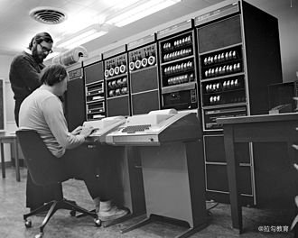
Unix 早期开放了源代码，可以说是现代操作系统的奠基之作——支持多任务、多用户，还支持分级安全策略。拥有内核、内存管理、文件系统、正则表达式、开发工具、可执行文件格式、命令行工具等等。可以说，到今天 Unix 不再代表某种操作系统，而是一套统一的，大家都认可的架构标准。
因为开源的原因，Unix 的版本非常复杂。具体你可以看下面这张大图。
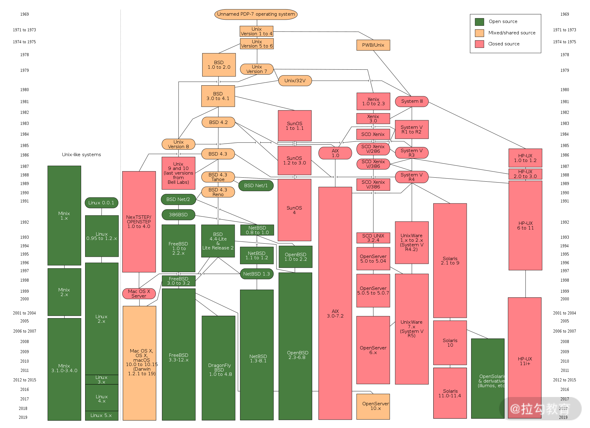
绿色的是开源版本，黄色的是混合版本，红色的是闭源版本。这里面有大型机使用的版本，有给工作站使用的版本，也有个人电脑版本。比如 Mac OS、SunOS、Solaris 都有用于个人电脑和工作站；HP-UX 还用作过大型机操作系统。另外，Linux 系统虽然不是 Unix，但是参考了 Unix 的设计，并且遵照 Unix 的规范，它从 Unix 中继承过去不少好用的工具，这种我们称为 Unix-like 操作系统。
个人电脑革命
从大型机兴起后，就陆续有人开始做个人电脑。但是第一台真正火了的个人电脑，是 1975 年 MITS 公司推出的 Altair 8800。
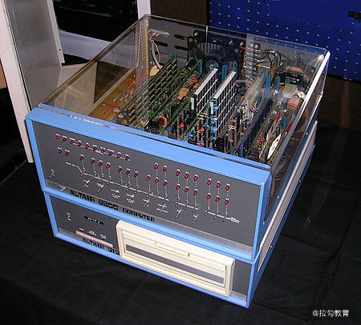
里面有套餐可选，套餐价是 $439。MITS 的创始人 ED Roberts，和投资人承诺可以卖出去 800 台，没想到第一个月就卖出了 1000 台。对于一台没有显示器、没有键盘，硬件是组装的也不是自有品牌的电脑，它的购买者更多的是个人电脑爱好者们。用户可以通过上面的开关进行编程，然后执行简单的程序，通过观察信号灯看到输出。所以，市场对个人电脑的需求，是普遍存在的，哪怕是好奇心，大家也愿意为之买单。比尔·盖茨也买了这台机器，我们后面再说。
Altair 8800 出品半年后，做个人电脑的公司就如雨后春笋一样出现了。IBM 当然也嗅到了商机。
1976 年 21 岁的乔布斯在一次聚会中说服了 26 岁的沃兹尼亚克一起设计 Apple I 电脑。 沃兹尼亚克大二的时候，做过一台组装电脑，在这次聚会上，他的梦想被乔布斯点燃了，当晚就做了 Apple I 的设计图。1976 年 6 月份，Apple I 电脑就生产出了 200 台，最终卖出去 20 多台。 当时 Apple I 只提供一块板，不提供键盘、显示器等设备。这样的电脑竟然有销量，在今天仍然是不可想象的。
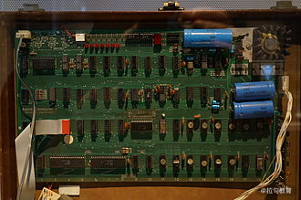
Apple I 在商业上的发展不太成功，但是 1977 年，乔布斯又说服了投资人，投资生产 Apple II。结果当年就让乔布斯身价上百万，两年后就让他身价过亿。
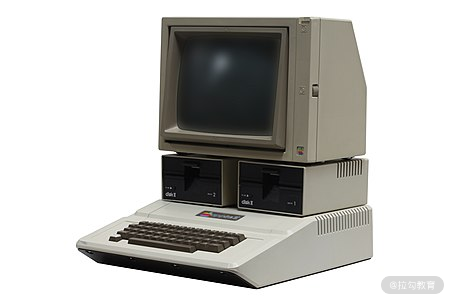
你可以看到 Apple II 就已经是一个完整的机器了。一开始 Apple II 是苹果自研的操作系统，并带有沃兹尼亚克写的简单的 BASIC 语言解释器。1978 年 Apple 公司花了 13000 美金采购了一家小公司的操作系统，这家小公司负责给苹果开发系统，也就是后来的 Apple DOS 操作系统。这家公司还为 Apple DOS 增加了文件浏览器。
1980s 初， 蓝巨人 IBM 感受到了来自 Apple 的压力。如果个人市场完全被抢占，这对于一家专做商业系统的巨头影响会非常大。因此 IBM 成立了一个特别行动小组，代号 Project Chess，目标就是一年要做出一台能够上市的 PC。但是这次 IBM 没有豪赌，只是组织了一个 150 人的团队。因此，他们决定从硬件到软件都使用其他厂商的，当时的说法叫作开放平台。
IBM 没有个人电脑上可用的操作系统，因此找到了当时一家做操作系统和个人电脑的厂商，Digital Research 公司。Digital Research 的 CP/M 操作系统已经受到了市场的认可，但是这家公司的创始人竟然拒绝了蓝巨人的提议，态度也不是很友好。这导致 Digital Research 直接错过了登顶的机会。蓝巨人无奈之下，就找到了只有 22 岁的比尔·盖茨。
盖茨 22 岁的时候和好朋友艾伦创了微软公司。他其实也购买了 Altair 8800（就是本课时前面我们提到的第一台卖火的机器），但是他们目的是和 Altair 的制造商 MITS 公司搞好关系。最终盖茨成功说服了 MITS 公司雇佣艾伦，在 Altair 中提供 BASIC 解释器。BASIC 这门语言 1964 年就存在了，但是盖茨和艾伦是第一个把它迁移到 PC 领域的。IBM 看上了盖茨的团队，加上 Digital Research 拒绝了自己，有点生气，就找到了盖茨。
盖茨非常重视这次机会。但是这里有个问题，微软当时手上是没有操作系统的，他们连夜搞定了一个方案，就是去购买另一家公司的 86-DOS 操作系统，然后承诺 IBM 自己团队负责修改和维护。微软花了 50000 美金买了 86-DOS 的使用权，允许修改和再发布。然后微软再将 86-DOS 授权给 IBM。这里面有非常多有趣的故事，如果你感兴趣可以去查资料了解更多的内容。
最后，Project Chess 小组在 1 年内，成功完成了使命，做出了 IBM 个人电脑，看上去非常像 APPLE II。名字就叫 Personal Computer， 就是我们今天说的 PC。86-DOS 也改成了 PC DOS，IBM 的加入又给 PC 市场带了一波节奏，让更多的人了解到了个人电脑。
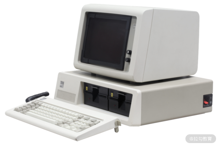
微软也跟着水涨船高，每销售 1 台 PC，微软虽然拿不到利润，但保留了 PC DOS 的版权。而且拿到 IBM 的合同，为 IBM 开发核心系统，这也使得微软的地位大涨。盖茨相信马上就会有其他厂商开始和 IBM 竞争，会需要 PC DOS，而微软只需要专心做好操作系统就足够了。
其实没有用多久， 1982 年康柏公司花了几个月时间，雇用了 100 多个工程师，逆向工程了 IBM PC，然后就推出了兼容 IBM PC 的电脑，价格稍微便宜一点。然后整个产业沸腾了，各种各样的商家都进来逆向 IBM PC。整个产业陷入了价格战，每过半年人们可以花更少的钱，拿到配置更高的机器。这个时候微软就在背后卖操作系统，也就是 PC DOS 的保真版，MS-DOS。直到 10 年后，微软正式和 IBM 决裂。
微软第一个视窗操作系统是 1985 年，然后又被 IBM 要求开发它的竞品 OS/2。需要同时推进两个系统，所以微软不是很开心，但是又不能得罪蓝巨人。IBM 也不是很舒服，但是又不得不依赖微软。这个情况一直持续到 1995 年左右，Windows 95 发布的时候，微软还使用 MS-DOS 作为操作系统核心，到了 2001 年 Windows XP 发布的时候，就切换到了 Windows NT 内核。就这样，微软成功发展壮大，并逃离蓝巨人的掌控，成为世界上最大的操作系统公司。
Linux
微软的崛起伴随着个人电脑的崛起。但是推动操作系统技术发展，还有另一条线，就是以开源力量为主导的 Unix 线。Unix 出现后，随着一些商业公司逐渐加入，部分公司开始不愿意再公开源代码，而是公开销售修改过的 Unix，这引起了很多黑客的不满。其中比较著名的有理查德·斯托曼和林纳斯。
大黑客理查德·斯托曼有一次觉得打印机有一部分功能不方便，想要修改，却被施乐公司拒绝提供打印机驱动的源代码，导致了一些茅盾。再加上自己工作的 AI 实验室的成员被商业公司挖走了，他认为商业阻碍了技术进步。于是开始到处呼吁软件应该是自由的、开源的，人们应该拿到源代码进行修改和再发布。
1985 年理查德·斯托曼发布了 GNU 项目，本身 GNU 是一个左递归，就是 GNU = GNU's not Unix。GNU 整体来说还是基于 Unix 生态，但在斯托曼的领导下开发了大量的优质工具，比如 gcc 和 emacs 等。但是斯托曼一直为 GNU 没有自己的操作系统而苦恼。
结果 1991 年 GNU 项目迎来了转机，年仅 21 岁的林纳斯·托瓦兹在网络上发布了一个开源的操作系统，就是 Linux。林纳斯的经历和斯托曼有点类似，所以林纳斯会议听斯托曼讲座，让他有种热血沸腾的感觉。林纳斯不满意 MS-DOS 不开源，但是作为学生党，刚刚学完了 Andy 的《操作系统：设计与实现》，本来一开始没有想过要写 Linux。最后是因为 Unix 的商用版本太贵了买不起，才开始写 Linux。
斯托曼也觉得 GNU 不能没有操作系统，就统称为 GNU/Linux，并且利用自己的影响力帮助林纳斯推广 Linux。这样就慢慢吸引了世界上一批顶级的黑客，一起来写 Linux。后来 Linux 慢慢成长壮大，成为一块主流的服务器操作系统。当然 Linux 后来也衍生了大量的版本，下图是不同版本的 Linux 的分布。
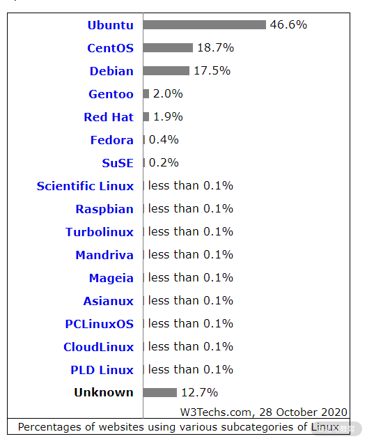
数据取自 W3Techs.com 2020
Ubuntu 源自 Debian，有着非常漂亮的桌面体验，我就是使用 Ubuntu 开发程序。 Ubuntu 后面有商业公司 Canonical 的支持，也有社区的支持。Centos 源自 Red Hat 公司的企业版 Linux（RHEL），商用版本的各种硬件、软件支持通常会好一些，因此目前国内互联网企业的运维都偏向使用 CentosOS。第三名的 Debian 是 Ubuntu 的源头，是一个完全由自由软件精神驱动的社区产品，提供了大量的自由软件。当然也有人批评 Debian 太过于松散，发行周期太长，漏洞修复周期长等等。
Android
乔布斯的苹果电脑最终没有卖过微软的操作系统。但是苹果手机就独占了世界上 2/3 的手机利润。苹果手机取得成功后，各大厂商都开始做智能手机。然后 Google 收购了 Android 公司，复刻了微软成功道路。Android 是基于 Linux 改造的。Android 之所以能成功有这么几个原因：
- Android 是免费的，因此手机厂商不需要为使用 Android 支付额外的费用，而 Google 可以利用 Google 的移动服务变现，据统计 Google Play 应用商店 + Google 搜索服务 + Google 地图三项一年的营收就可以到 188 亿美金；
- Android 是开源生态，各大厂商可以基于 Android 修改；
- Android 系统基于 Linux 稳定性很好，崩溃率很低；
- 最后就是应用生态，用 Android 技术开发 App 可以在各大手机品牌通用。
个人认为还有一个重要原因是比尔·盖茨把微软做大之后，就不再参与微软事物了，醉心于改变人类的事业，所以智能手机、操作系统才有苹果和 Google 的机会。
总结
本课时我主要给你介绍了操作系统的历史。
- IBM 靠一次豪赌，抓住了大型机的市场，至今仍在盈利。
- 苹果靠个人电脑起家，通过智能手机成为商业巨头。
- 微软靠 IBM 的扶持起家，在个人电脑兴起的浪潮中抓住了机会，成为最大的 PC 操作系统厂商。
- 最后 Google 开源 Android，成为移动端操作系统的王者。
在这几十年的浪潮中，商业竞争风起云涌，但是学术界和黑客们也创造了以自由软件运动为核心的社区文化，操作系统经历了百家争鸣的时代和残酷的淘汰，大浪淘沙，剩下了 Windows 和 Unix 系。Unix 系操作系统包括 Unix、 Linux、Mac OS 和 Android。
那么通过这节课的学习，你现在可以尝试来回答本节关联的面试题目：为什么 Debian 漏洞排名第一还这么多人用？
【解析】 首先你要明白漏洞是无可避免的。这是因为软件设计是一个不可计算的问题。因为无法计算，发现漏洞往往需要反复使用软件，或者利用工具扫描看到现象，或者阅读源代码才能找到代码问题……
那么什么软件漏洞多呢？
假设开发人员的水平差不多，那么开源软件漏洞一定更多。开放源代码后，可以接触到的源码群体庞大，作为技术资料分析的场景也更庞大，大量开发者讨论和分析设计，技术交流频繁，漏洞往往发现更快。这样你就可以理解为什么 Debian/Android 和 Linux Kernel 位居漏洞排名前三了。
在 Linux 发行版中，Ubuntu 和 Debian 共享着大量代码，Ubuntu+Debian 市场份额占到 60%，开发群体遍布世界各地，因此 Debian 会被发现其中本来存在着大量的漏洞。Android 同样是开源软件中的佼佼者，开发者依然是一个庞大的群体，因此 Android 漏洞也很多。
Linux Kernel 代码量级相对 Debian、Android 小，但是有更多的人在用 Linux Kernel 源码，因此漏洞多。而 Windows，因为是闭源产品，所以漏洞反而不容易被发现。